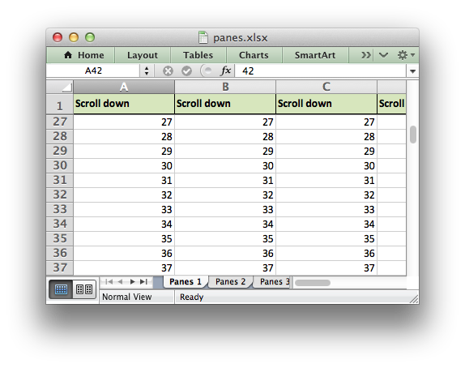

Example: Freeze Panes and Split Panes
An example of how to create panes in a worksheet, both “freeze” panes and “split” panes. See the freeze_panes() and split_panes() methods for more details.
#######################################################################
#
# Example of using Python and the XlsxWriter module to create
# worksheet panes.
#
# Copyright 2013, John McNamara, jmcnamara@cpan.org
#
from xlsxwriter.workbook import Workbook
workbook = Workbook('panes.xlsx')
worksheet1 = workbook.add_worksheet('Panes 1')
worksheet2 = workbook.add_worksheet('Panes 2')
worksheet3 = workbook.add_worksheet('Panes 3')
worksheet4 = workbook.add_worksheet('Panes 4')
#######################################################################
#
# Set up some formatting and text to highlight the panes.
#
header_format = workbook.add_format({'bold': True,
'align': 'center',
'valign': 'vcenter',
'fg_color': '#D7E4BC',
'border': 1})
center_format = workbook.add_format({'align': 'center'})
#######################################################################
#
# Example 1. Freeze pane on the top row.
#
worksheet1.freeze_panes(1, 0)
# Other sheet formatting.
worksheet1.set_column('A:I', 16)
worksheet1.set_row(0, 20)
worksheet1.set_selection('C3')
# Some text to demonstrate scrolling.
for col in range(0, 9):
worksheet1.write(0, col, 'Scroll down', header_format)
for row in range(1, 100):
for col in range(0, 9):
worksheet1.write(row, col, row + 1, center_format)
#######################################################################
#
# Example 2. Freeze pane on the left column.
#
worksheet2.freeze_panes(0, 1)
# Other sheet formatting.
worksheet2.set_column('A:A', 16)
worksheet2.set_selection('C3')
# Some text to demonstrate scrolling.
for row in range(0, 50):
worksheet2.write(row, 0, 'Scroll right', header_format)
for col in range(1, 26):
worksheet2.write(row, col, col, center_format)
#######################################################################
#
# Example 3. Freeze pane on the top row and left column.
#
worksheet3.freeze_panes(1, 1)
# Other sheet formatting.
worksheet3.set_column('A:Z', 16)
worksheet3.set_row(0, 20)
worksheet3.set_selection('C3')
worksheet3.write(0, 0, '', header_format)
# Some text to demonstrate scrolling.
for col in range(1, 26):
worksheet3.write(0, col, 'Scroll down', header_format)
for row in range(1, 50):
worksheet3.write(row, 0, 'Scroll right', header_format)
for col in range(1, 26):
worksheet3.write(row, col, col, center_format)
#######################################################################
#
# Example 4. Split pane on the top row and left column.
#
# The divisions must be specified in terms of row and column dimensions.
# The default row height is 15 and the default column width is 8.43
#
worksheet4.split_panes(15, 8.43)
# Other sheet formatting.
worksheet4.set_selection('C3')
# Some text to demonstrate scrolling.
for col in range(1, 26):
worksheet4.write(0, col, 'Scroll', center_format)
for row in range(1, 50):
worksheet4.write(row, 0, 'Scroll', center_format)
for col in range(1, 26):
worksheet4.write(row, col, col, center_format)
workbook.close()